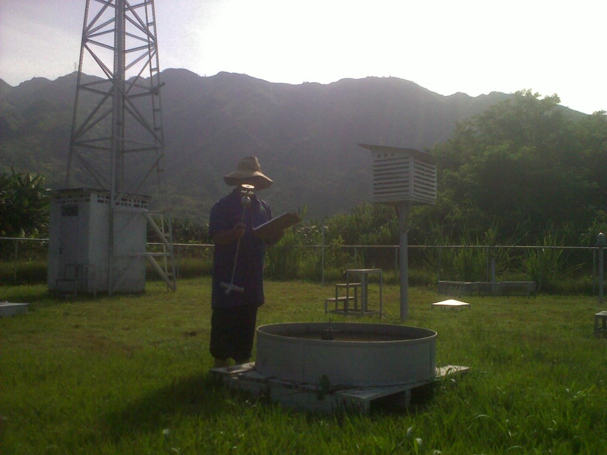
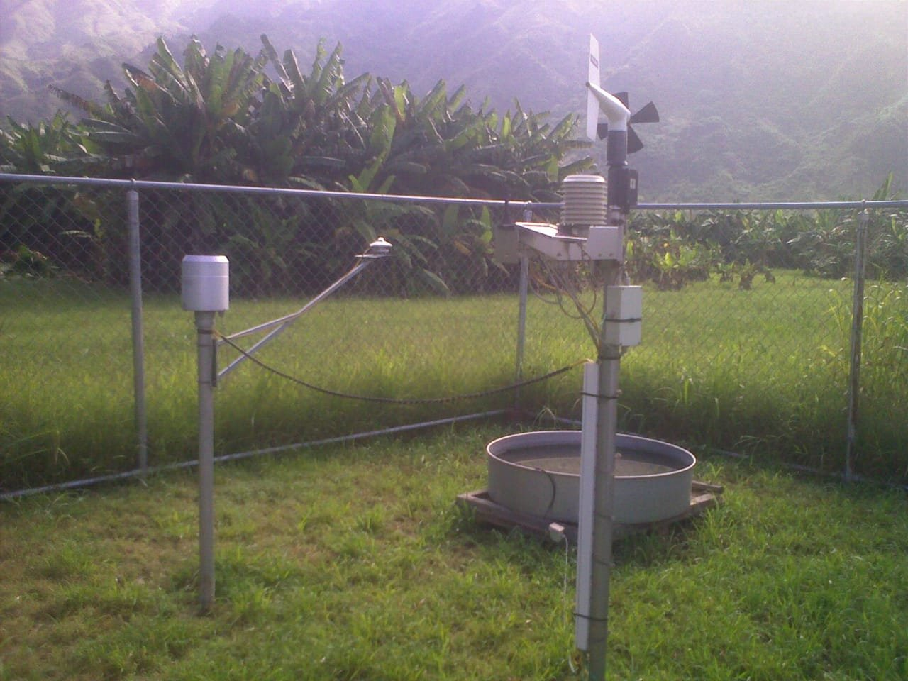
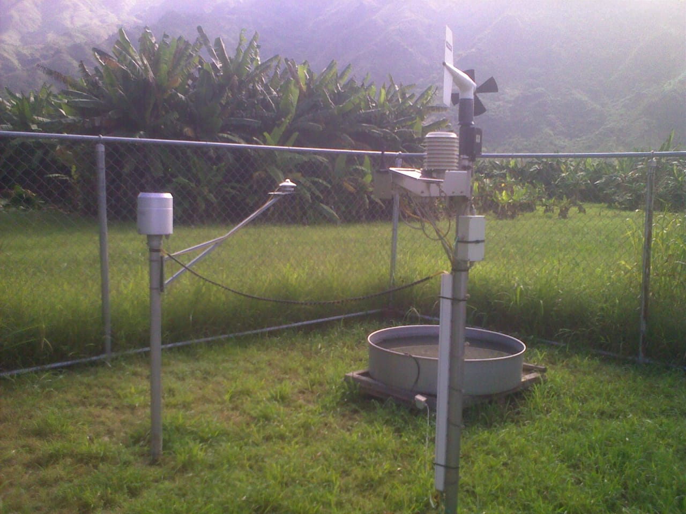
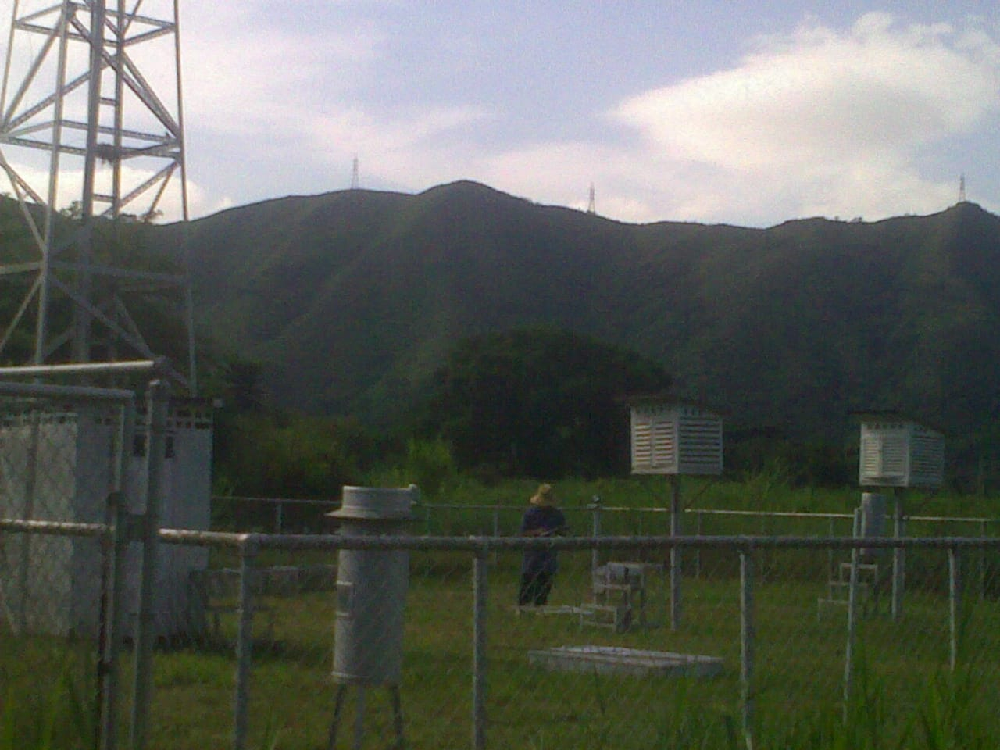
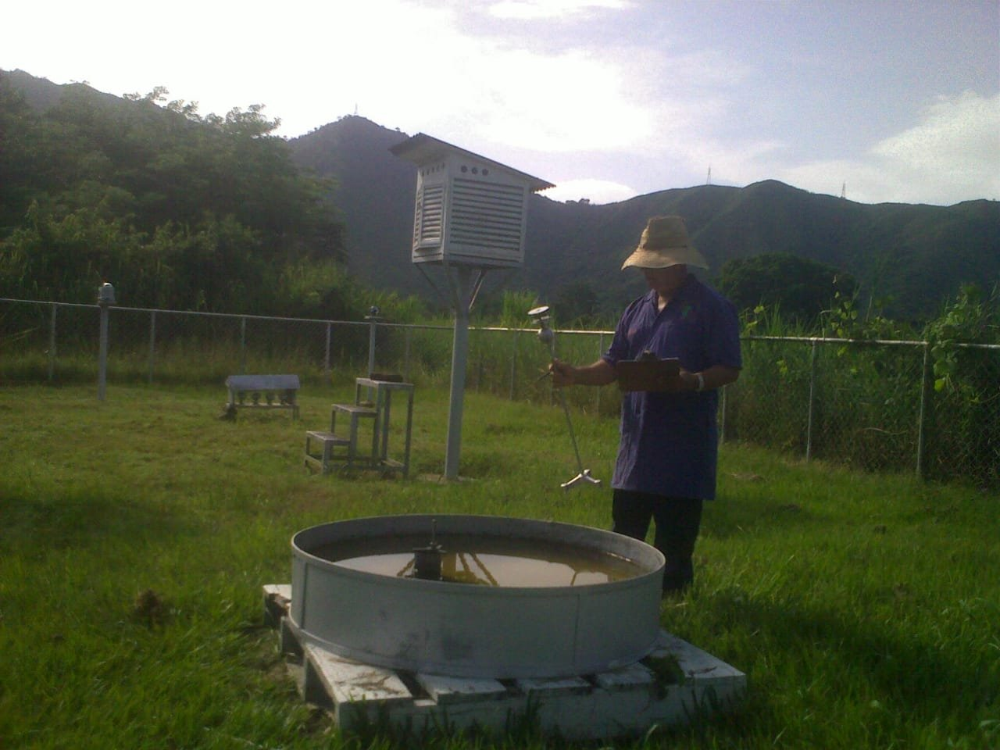
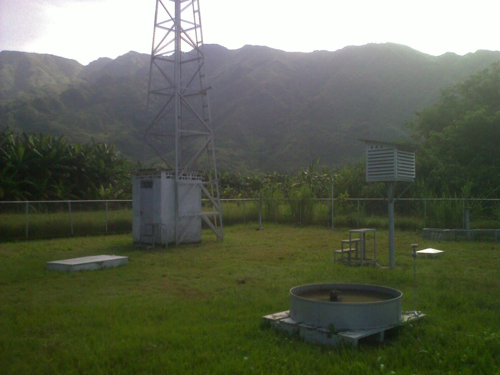

Reseña Histórica
la estación Climatológica del Centro Nacional de Investigaciones Agropecuarias (CENIAP) Maracay, está registrada con el serial 2604, perteneciente a la red agrometeorológica del Instituto Nacional de Investigaciones Agrícolas (INIA), ubicada en Maracay, estado Aragua, Su ubicación es latitud: 10º 17' N, longitud: 67º 37 W, altitud: 455 m s. n. m.





